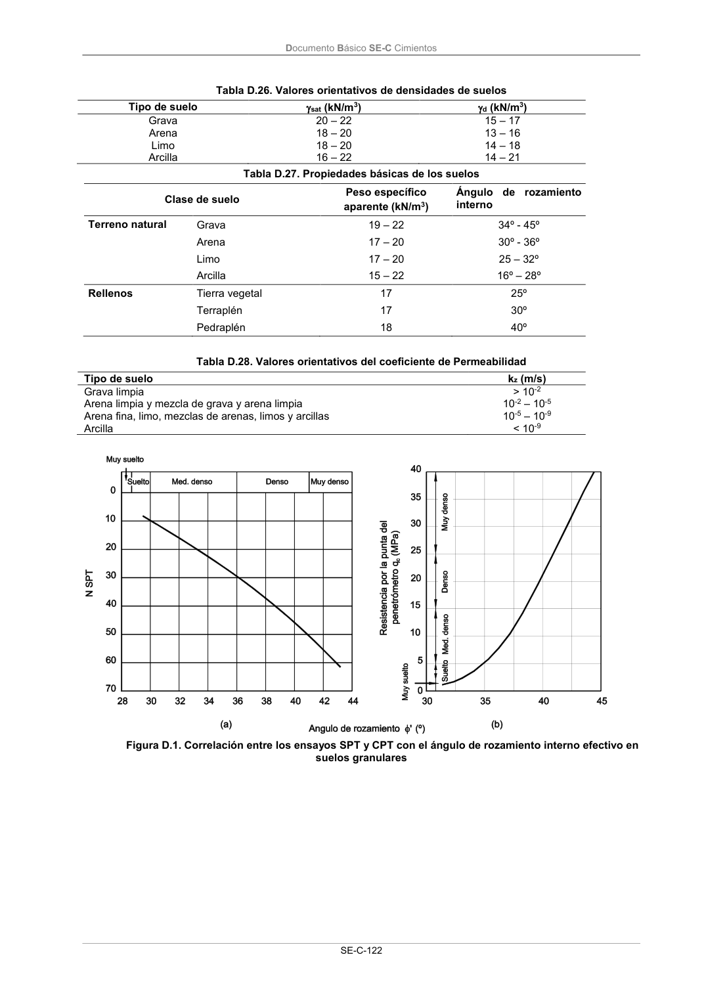

DB-SE-C Cimientos · edición 2019-12-20 · capa oficial
Documento DB-SE-C-oficial · SHA-256 del PDF a71133f4b0dca253e45ea3071c70f2a512354bcc5cd841bf89b1a502f567ac5e
Página física 127 de 165.
Copia fiel del PDF fuente · Fuente oficial
Ficha de la disposición en la fuente oficial
Formato: Texto de la página (Markdown)
Documento Básico SE-C Cimientos SE-C-122 Tabla D.26. Valores orientativos de densidades de suelos Tipo de suelo sat (kN/m3) d (kN/m3) Grava 20 – 22 15 – 17 Arena 18 – 20 13 – 16 Limo 18 – 20 14 – 18 Arcilla 16 – 22 14 – 21 Tabla D.27. Propiedades básicas de los suelos Clase de suelo Peso específico aparente (kN/m3) Ángulo de rozamiento interno Terreno natural Grava 19 – 22 34º - 45º Arena 17 – 20 30º - 36º Limo 17 – 20 25 – 32º Arcilla 15 – 22 16º – 28º Rellenos Tierra vegetal 17 25º Terraplén 17 30º Pedraplén 18 40º Tabla D.28. Valores orientativos del coeficiente de Permeabilidad Tipo de suelo kz (m/s) Grava limpia > 10-2 Arena limpia y mezcla de grava y arena limpia 10-2 – 10-5 Arena fina, limo, mezclas de arenas, limos y arcillas 10-5 – 10-9 Arcilla < 10-9 Figura D.1. Correlación entre los ensayos SPT y CPT con el ángulo de rozamiento interno efectivo en suelos granulares
